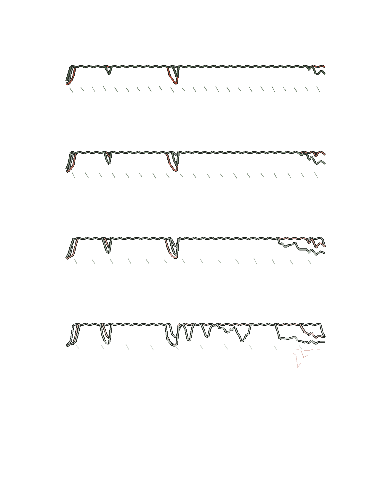

Sider / a voice at the cuff
Favorite,
worn
One voice returns four times. Each pass grows quieter and less bright, then trails into silence. The pitch and order stay as recorded.

The image is a listening companion, not a transcript. No translation is added. The sleeve placement was drawn; the print was not tested on cloth.